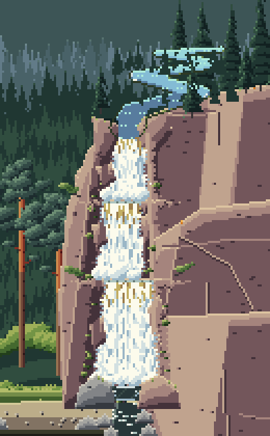
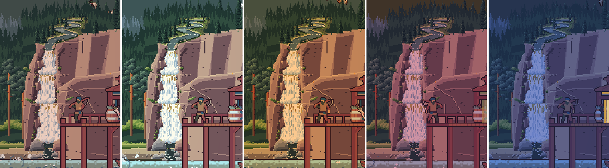
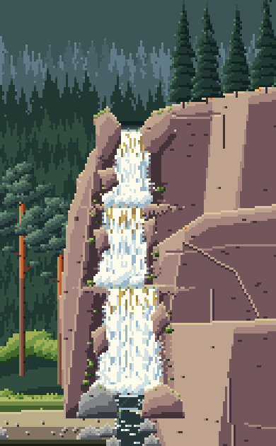
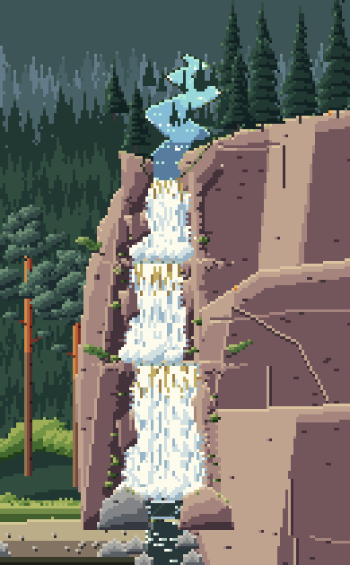
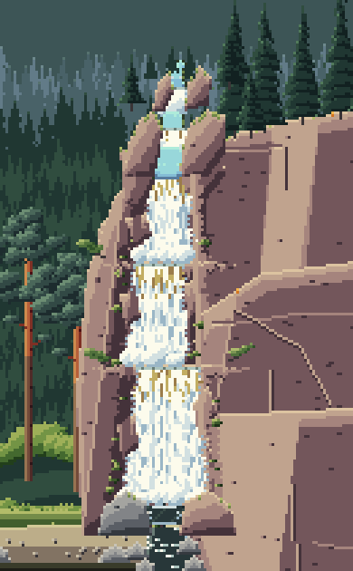
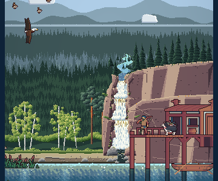

<title>Bluff and Stream Study</title>
<meta name="claude:viewport-fit-sides" content="cover">
<link rel="preconnect" href="https://fonts.googleapis.com">
<link rel="stylesheet" href="https://fonts.googleapis.com/css2?family=Pixelify+Sans:wght@500;700&family=Source+Serif+4:opsz,wght@8..60,400;8..60,600&family=JetBrains+Mono:wght@400;600&display=swap">
<style>
/* Layout: a single reading column like a field-station report, with full-bleed image plates and swatch strips drawn from the lake itself. */
:root {
  --bg: #eef1ec;
  --panel: #e2e8e2;
  --ink: #1b2826;
  --muted: #566764;
  --line: #c3cec7;
  --accent: #a24f45;
  --pine: #2d5747;
  --display: "Pixelify Sans", "Courier New", monospace;
  --body: "Source Serif 4", Georgia, "Times New Roman", serif;
  --mono: "JetBrains Mono", ui-monospace, Menlo, Consolas, monospace;
}
@media (prefers-color-scheme: dark) {
  :root:not([data-theme="light"]) {
    --bg: #0f1918; --panel: #172423; --ink: #e2e9e4; --muted: #97a9a4; --line: #2a3b39;
    --accent: #e29a8b; --pine: #86bba4; color-scheme: dark;
  }
}
:root[data-theme="dark"] {
  --bg: #0f1918; --panel: #172423; --ink: #e2e9e4; --muted: #97a9a4; --line: #2a3b39;
  --accent: #e29a8b; --pine: #86bba4; color-scheme: dark;
}
* { box-sizing: border-box; }
body {
  background: var(--bg); color: var(--ink); font-family: var(--body); font-size: 17px; line-height: 1.6;
  padding-left: max(16px, env(safe-area-inset-left, 0px)); padding-right: max(16px, env(safe-area-inset-right, 0px));
  padding-block: 28px 64px;
}
main { max-width: 720px; margin: 0 auto; display: flex; flex-direction: column; gap: 44px; }
h1, h2, h3 { font-family: var(--display); font-weight: 700; line-height: 1.15; text-wrap: balance; margin: 0; }
h1 { font-size: clamp(32px, 7vw, 46px); letter-spacing: 0.5px; }
h2 { font-size: 26px; color: var(--pine); }
h3 { font-size: 19px; font-weight: 500; }
p { margin: 0; max-width: 65ch; }
section { display: flex; flex-direction: column; gap: 16px; }
.eyebrow { font-family: var(--mono); font-size: 12px; letter-spacing: 1.5px; text-transform: uppercase; color: var(--muted); }
.lede { font-size: 19px; }
a { color: var(--accent); }
figure { margin: 0; display: flex; flex-direction: column; gap: 8px; }
figure img { width: 100%; image-rendering: pixelated; border-radius: 4px; display: block; }
figcaption { font-size: 14px; color: var(--muted); }
.stats { display: grid; grid-template-columns: repeat(auto-fit, minmax(150px, 1fr)); gap: 12px; }
.stat { border-top: 3px solid var(--pine); padding-top: 8px; display: flex; flex-direction: column; gap: 2px; }
.stat b { font-family: var(--display); font-size: 30px; font-weight: 700; font-variant-numeric: tabular-nums; }
.stat span { font-size: 14px; color: var(--muted); }
ol.findings { margin: 0; padding-left: 1.4em; display: flex; flex-direction: column; gap: 12px; }
ol.findings li::marker { font-family: var(--mono); color: var(--accent); }
ol.findings b { font-weight: 600; }
.meter { display: grid; grid-template-columns: 9.5em 1fr; gap: 6px 12px; align-items: center; font-size: 14px; }
.meter .bars { display: flex; flex-direction: column; gap: 3px; }
.bar { height: 10px; border-radius: 2px; background: var(--line); position: relative; }
.bar i { position: absolute; inset: 0 auto 0 0; border-radius: 2px; }
.bar.ours i { background: var(--pine); }
.bar.pack i { background: var(--accent); }
.legend { display: flex; gap: 16px; font-size: 13px; color: var(--muted); flex-wrap: wrap; }
.legend span::before { content: ""; display: inline-block; width: 10px; height: 10px; border-radius: 2px; margin-right: 6px; vertical-align: -1px; }
.legend .l-ours::before { background: var(--pine); }
.legend .l-pack::before { background: var(--accent); }
.skies { display: flex; flex-direction: column; gap: 6px; }
.sky { display: grid; grid-template-columns: 7.5em 1fr; align-items: center; gap: 12px; font-size: 14px; }
.sky div { height: 30px; border-radius: 3px; }
.swatches { display: grid; grid-template-columns: repeat(auto-fit, minmax(200px, 1fr)); gap: 14px; }
.sw { display: flex; flex-direction: column; gap: 6px; min-width: 0; }
.sw .strip { display: flex; height: 34px; border-radius: 3px; overflow: hidden; }
.sw .strip i { flex: 1; }
.sw b { font-weight: 600; font-size: 15px; }
.sw span { font-size: 13px; color: var(--muted); font-family: var(--mono); overflow-wrap: anywhere; }
.lessons { display: grid; grid-template-columns: repeat(auto-fit, minmax(250px, 1fr)); gap: 18px 24px; }
.lessons div { display: flex; flex-direction: column; gap: 4px; }
.lessons h3 { color: var(--accent); }
.lessons p { font-size: 15px; }
ol.rules { margin: 0; padding: 0; list-style: none; counter-reset: r; display: flex; flex-direction: column; border-top: 1px solid var(--line); }
ol.rules li { counter-increment: r; display: grid; grid-template-columns: 2.4em 1fr; gap: 8px; padding: 12px 0; border-bottom: 1px solid var(--line); }
ol.rules li::before { content: counter(r, decimal-leading-zero); font-family: var(--mono); color: var(--muted); font-size: 14px; padding-top: 3px; }
.qs { display: flex; flex-direction: column; gap: 14px; }
.q { background: var(--panel); border-radius: 6px; padding: 16px 18px; display: flex; flex-direction: column; gap: 8px; }
.q h3 { font-size: 18px; }
.q ul { margin: 0; padding-left: 1.2em; font-size: 15px; display: flex; flex-direction: column; gap: 4px; }
.q .rec { font-size: 14px; color: var(--pine); font-family: var(--mono); }
.next { font-size: 15px; color: var(--muted); }
code { font-family: var(--mono); font-size: 0.85em; }
.viewer { display: flex; flex-direction: column; gap: 10px; }
.viewer img { width: 100%; height: auto; image-rendering: pixelated; border-radius: 4px; display: block; aspect-ratio: 360 / 300; background: var(--panel); }
.pick { display: flex; flex-wrap: wrap; gap: 6px; }
.pick button { font: 600 14px var(--mono); padding: 8px 12px; border-radius: 4px; border: 1px solid var(--line); background: var(--panel); color: var(--ink); cursor: pointer; min-width: 44px; }
.pick button[aria-pressed="true"] { background: var(--pine); color: var(--bg); border-color: var(--pine); }
.pick button:focus-visible { outline: 2px solid var(--accent); outline-offset: 2px; }
.cap { font-size: 15px; min-height: 3em; }
.cards { display: grid; grid-template-columns: repeat(auto-fit, minmax(210px, 1fr)); gap: 16px; }
.card { display: flex; flex-direction: column; gap: 6px; }
.card h3 { color: var(--accent); }
.card p { font-size: 15px; }
.card ul { margin: 0; padding-left: 1.1em; font-size: 14px; color: var(--muted); display: flex; flex-direction: column; gap: 3px; }
.motion { display: grid; grid-template-columns: repeat(4, 1fr); gap: 10px; }
.motion figure img { aspect-ratio: 390 / 630; height: auto; }
@media (max-width: 520px) { .motion { grid-template-columns: repeat(2, 1fr); } }
</style>

<main>
  <header style="display:flex;flex-direction:column;gap:12px">
    <span class="eyebrow">Reel It In · Study 4 · 22 Oct 2026</span>
    <h1>The bluff and its stream</h1>
    <p class="lede">The cascade sits in the rock now, but the bluff around it was still one smooth block with the falls at its corner, and the river came from nowhere. Here are three ways to reshape the bluff and bring a stream down to the lip, so the falls belongs to a landscape and the scene gets some depth.</p>
  </header>

  <section>
    <span class="eyebrow">Your pick, tuned · now in the game</span>
    <h2>B, a river in its own valley</h2>
    <p>You picked B but said the river ran into the trees with no sign of a natural stream. It had no banks, trees stood in the water, and its far reaches floated in the haze of the far ridge. Now the forest rises behind the bluff so the river crosses forested ground; it runs in its own opening of sedge meadow, the forest stepping back from it; each reach has a far bank of gravel and grass with its trees standing on it, and a dark, wet near bank; gravel bars sit on the inside of the bends; the water reflects the far bank's trees as a dark band along its far edge and the sky in its middle; no tree stands in it; and its far end goes round behind the trees.</p>
    <div class="motion" style="grid-template-columns: repeat(2, 1fr)">
      <figure><figcaption>B as first drawn</figcaption></figure>
      <figure><figcaption>B tuned</figcaption></figure>
    </div>
    <figure><figcaption>In the game: dawn, day, golden hour, dusk, night</figcaption></figure>
  </section>

  <section>
    <span class="eyebrow">In motion, close up</span>
    <h2>Now, A, B and C</h2>
    <div class="motion">
      <figure><figcaption>Now</figcaption></figure>
      <figure><figcaption>A &middot; ravine</figcaption></figure>
      <figure><figcaption>B &middot; plateau river</figcaption></figure>
      <figure><figcaption>C &middot; rapids gorge</figcaption></figure>
    </div>
  </section>

  <section class="viewer">
    <span class="eyebrow">In the game</span>
    <div class="pick" role="group" aria-label="Version">
      <button data-v="now" aria-pressed="false">Now</button>
      <button data-v="A" aria-pressed="true">A</button>
      <button data-v="B" aria-pressed="false">B</button>
      <button data-v="C" aria-pressed="false">C</button>
    </div>
    <div class="pick" role="group" aria-label="Time of day">
      <button data-t="dawn" aria-pressed="false">Dawn</button>
      <button data-t="day" aria-pressed="true">Day</button>
      <button data-t="golden" aria-pressed="false">Golden</button>
      <button data-t="dusk" aria-pressed="false">Dusk</button>
      <button data-t="night" aria-pressed="false">Night</button>
    </div>
    
    <p class="cap" id="cap"></p>
  </section>

  <section>
    <span class="eyebrow">The three versions</span>
    <h2>What each one tries</h2>
    <div class="cards">
      <div class="card"><h3>A &middot; Ravine</h3><p>The bluff's top dips into a V where the river has cut it. The stream winds down the ravine out of the forest, narrower and paler the further back it is, with trees on the slopes in front of it.</p><ul><li>The most depth: you can follow it back into the woods</li><li>The stream is a strong shape on the skyline</li></ul></div>
      <div class="card"><h3>B &middot; Plateau river</h3><p>The bluff stays high. The river comes from far back across the plateau, seen side-on as reaches stacked between the rows of trees, swinging left and right, each further one thinner and lighter.</p><ul><li>A wide, calm river feel</li><li>Reads furthest back of the three</li></ul></div>
      <div class="card"><h3>C &middot; Rapids gorge</h3><p>The river cuts a narrow rocky gorge into the bluff's top and comes down it in two small rapids before the falls, low granite walls either side.</p><ul><li>The most rugged; the falls starts higher up</li><li>Smallest change to the skyline</li></ul></div>
    </div>
  </section>

  <section>
    <span class="eyebrow">What changed on the bluff in all three</span>
    <h2>The mountain round the falls</h2>
    <ol class="rules">
      <li><b>The top slopes into the notch.</b> The bluff's edge runs down into the river's notch either side, with a lit rim, instead of a flat top with a hole in it.</li>
      <li><b>The recess has walls.</b> The rock the falls has cut back is lit on the wall that faces the sun and shaded on the other, so the falls sits in a hollow.</li>
      <li><b>Cedars cling to the ledges</b> by the falls, the way white cedar grows on wet North Shore rock.</li>
      <li><b>The stream reads as water by the sky it reflects:</b> pale far off, where it catches the sky at a low angle, darker near, with ripples of sky sliding toward you, and white riffles at the bends.</li>
      <li><b>Trees stand in front of it,</b> row behind row, so it winds back into the forest instead of lying on top.</li>
    </ol>
  </section>

  <section>
    <span class="eyebrow">Honest notes</span>
    <h2>What isn't right yet</h2>
    <ol class="findings">
      <li><b>The stream's blue</b> is bright against the dark forest in A and B. It can be calmed toward grey-green once you pick a shape.</li>
      <li><b>The big flat facets</b> on the rest of the bluff are unchanged; the bluff itself could get the same treatment next.</li>
    </ol>
  </section>

  <section>
    <span class="eyebrow">Your call</span>
    <h2>Anything still off?</h2>
    <p>Tuned B is in the game now. Tell me anything that still feels unnatural and I'll keep working it.</p>
  </section>
</main>
<script>
(function () {
  var notes = {
    now: "The game today: revised cascade, the bluff a block, the river from nowhere.",
    A: "A: ravine. The top dips into a V and the stream winds down it out of the forest.",
    B: "B, tuned: the river winds across the plateau in its own valley, now in the game.",
    C: "C: rapids gorge. Two small rapids down a narrow rocky gorge before the falls."
  };
  var times = { dawn: "dawn", day: "midday", golden: "golden hour", dusk: "dusk", night: "night" };
  var v = "A", t = "day";
  var img = document.getElementById("shot"), cap = document.getElementById("cap");
  function show() {
    img.src = "study4/" + v + "-" + t + ".png";
    img.alt = (v === "now" ? "The game now" : "Version " + v) + " at " + times[t];
    cap.textContent = notes[v];
    document.querySelectorAll("[data-v]").forEach(function (b) { b.setAttribute("aria-pressed", b.dataset.v === v); });
    document.querySelectorAll("[data-t]").forEach(function (b) { b.setAttribute("aria-pressed", b.dataset.t === t); });
  }
  document.querySelectorAll("[data-v]").forEach(function (b) { b.addEventListener("click", function () { v = b.dataset.v; show(); }); });
  document.querySelectorAll("[data-t]").forEach(function (b) { b.addEventListener("click", function () { t = b.dataset.t; show(); }); });
  show();
})();
</script>
